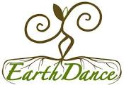
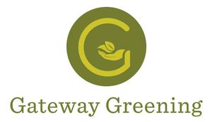
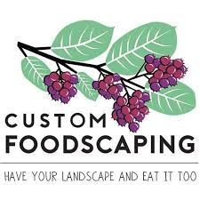
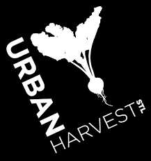

EarthDance Farms
EarthDance Farms is a 14-arce organic teaching farm located in Ferguson, MO. Their focus is on providing a model of sustainable food production to help cultivate food leaders within the community. They provide farm-based training for school groups, youth organizations, aspiring farmers, and local teens.
Gateway Greening
Gateway Greening is a non-profit organization that focuses on providing St. Louis with an educational environment to teach people sustainable urban agriculture. They provide citizens with educational resources, they help build and develop community gardens on vacant lots, and assist teachers in developing youth gardens.
Custom Foodscaping
Custom Foodscaping is a landscaping business based in St. Louis that focuses on creating edible landscapes. They work with school, communities, and restaurants to create sustainable, nature inspired landscapes that are also food-producing. Custom Foodscaping also provides classes and workshops on various permaculture and edible gardening topics.
Urban Harvest STL
Urban Harvest St. Louis is a non-profit organization that aims to provide equitable access to fresh, healthy food. They sustain urban farms in downtown and North St. Louis and donate their harvest to help supply healthy food to communities that exist in food deserts without access to fresh, nutritious food. Urban Harvest also helps to educate and engage these communities in the urban farming process.
Missouri Botanical Garden
The Missouri Botanical Garden is a center for botanical research and science education. In addition to their botanical gardens, they provide various resources and programs on sustainable living through the EarthWays Center. The EarthWays Center works with school and the general public to improve the environment.